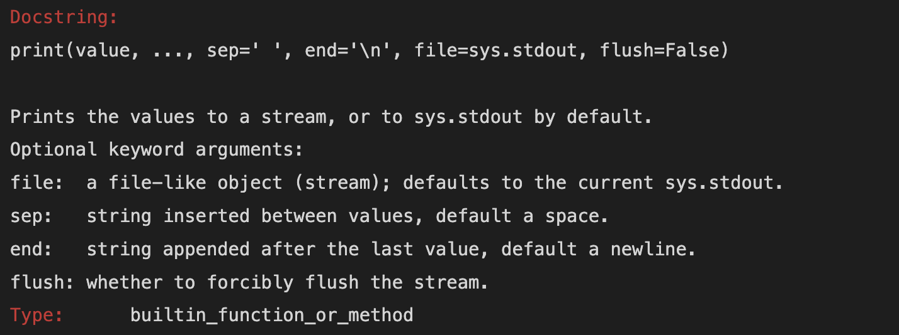
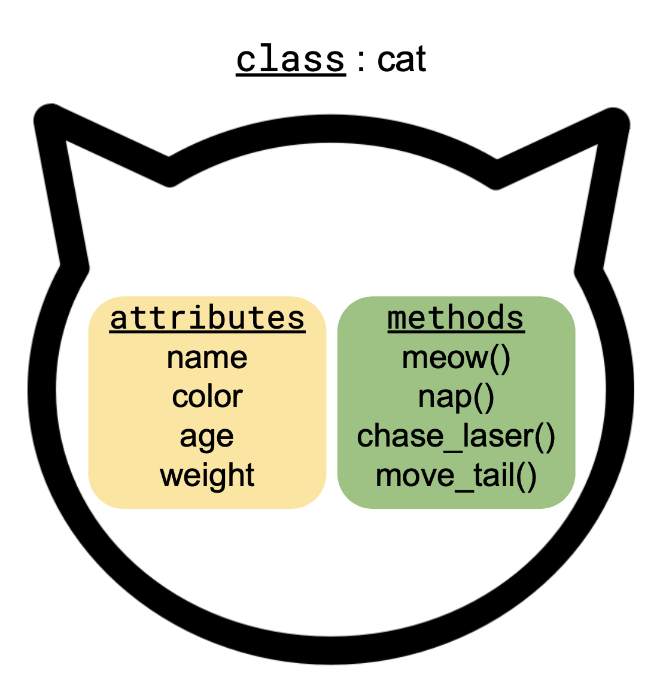

import numpy as npPython review
This is a short review about some core concepts in Python exemplified by objects in the NumPy library. The goal is to recall basic Python vocabulary that will be used throughout the course, rather than to serve as an introduction to Python programming.
Learning objectives
By the end of this lesson, students will be able to:
- Define and provide examples for basic terms in Python programming like variable, object, function, class, attribute, and method.
- Recognize optional and non-optional arguments in a function.
- Understand some of the basic differences in R and Python syntax.
Libraries and packages
A library is a collection of code that we can use to perform specific tasks in our programs. It can be a single file or multiple ones. NumPy [1] is one of the core libraries for numerical computing in Python. Many of the libraries we will use in this course use NumPy’s arrays as their building blocks. Additionally, NumPy objects have been optimized for processing, so computations on them are really fast and use less memory than doing the equivalent using the core Python data structures.
In this lesson we will use NumPy to review some fundamental concepts in Python you should be already familiar with.
Library or package?
A package in Python refers to a specific way of organizing multiple files of code into a directory hierarcy, often within a large code library. The words “library” and “package” are often used interchangeably. NumPy, for example, is both a library and a package.
Let’s start by importing the NumPy library by using the standard to abbreviation, np:
By importing numpy, all the objects and functions in this library will be available for us to use in our notebook.
Variables
We can think of a variable as a name we assign to a particular object in Python. For example:
# Assign a small array to variable a
a = np.array([[1,1,2],[3,5,8]])When we run the cell, we store the variables and their value. We can view a variable’s value in two ways from within our Jupyter notebook:
running a cell with the variable name
using the
printfunction to print the value
# Show the value
aarray([[1, 1, 2],
[3, 5, 8]])# Print the value
print(a)[[1 1 2]
[3 5 8]]
R and Python: assigning values
Remember that in Python we use the equal sign = to assign values to variables in the same way the left-arrow <- is used in R:
# R: assign value 10 to variable a
a <- 10# Python: assign value 10 to variable a
a = 10
Convention: Use
snake_case for naming variables
There are many ways of constructing multi-word variable names. In this course we will name variables using snake_case, where words are all in small caps and separated by underscores (ex: raw_data, fires_2023). This is the naming convention suggested by the PEP 8 - Style Guide for Python Code [2]. Remember variable names should be both descriptive and concise!
Objects
You will often encounter the word object in Python documentation and tutorials. Informally speaking, an object is a bundle of properties and actions about something specific. For example, an object could represent a data frame with properties such as number of rows, names of columns, and date created, and actions suchs as selecting a specific row or adding a new column.
A variable is the name we give a specific object, and the same object can be referenced by different variables. An analogy for this is the following: the Sun (object) is called “sol” in Spanish and “soleil” in French, so two different names (variables) represent the same object. You can read more technical details about the difference between objects and variables in Python here [3].
In practice, we can often use the word variable and object interchangeably (for example, in the next subsection!). I want to bring up what objects are so you are not caught off-guard with vocabulary you will often encounter in the documentation, StackExchange, etc.
Types
Every object in Python has a type, the type tells us what kind of object it is. We can also call the type of an object, the class of an object, so class and type both mean what kind of object we have.
We can see the type/class of a variable/object by using the type function:
print(a)
type(a)[[1 1 2]
[3 5 8]]numpy.ndarrayThe numpy.ndarray is the core object/data type in the NumPy package. We can check the type of an entry in the array by indexing:
print(a[0,0])
type(a[0,0])1numpy.int64Notice the type of the value 1 in the array is numpy.int64 and not just the standard Python integer type int. The NumPy type numpy.int64 is telling us 1 is an integer stored as a 64-bit number. NumPy has its own data types to deal with numbers depending on memory storage and floating point precision, click here to know see all the types.
R and Python: indexing
Remember that in Python the indexing starts from 0, while in R it starts from 1. If you learned R first, this might seem odd but it’s easy to get used to it with some practice. A way to understand this 0-indexing is that, in Python, the index indicates the displacement from the start of the collection. So ‘0 index in an array’ means ‘zero displacement from the start of the array’, in other words, the first element of the array.
Check-in
How would you access the value 5 in the array a?
Since “everything in Python is an object” and every object belongs to a class, we will interact with SO MANY classes in this course. Often, knowing the type of an object is the first step to finding information to code what you want!
Functions
print was our first example of a Python function. Functions take in a set of arguments, separated by commas, and use those arguments to create an output. There are several built-in funcions in Python, most of them are for interacting with the Python basic data types such as int (integers), float (decimal numbers), str (strings), and bool (boolean values).
Argument or parameter?
In this course we will use argument and parameter interchangeably. They do, however, have related but different meanings.
A parameter is a variable in the function definition that accepts an argument passed to the function. It is a placeholder in the function that will receive the value of an argument when the function is called.
For example, in the function
def my_function(parameter1, parameter2):
return parameter1 + parameter2parameter1 and parameter2 are parameters. When we call the function
result = my_function(5, 10)we have that 5 and 10 are arguments passed to the function my_function.
You will probably see parameter more often in a package’s documentation!
We can ask for information about what a function does function by executing ? followed by the function name:
?print
What we obtain is a docstring, a special type of comment that is used to document how a function (or class, or module) works. The first line in the docstring is telling us the function name followed by all of its arguments in parentheses. Then there is a short description of what the function does. And finally a list of the arguments and a brief explanation about each of them.
You can see there are different types of arguments inside the parenthesis. Roughly speaking, a function has two types of arguments:
non-optional arguments: arguments you need to specify for the function to do something, and
optional arguments: arguments that are pre-filled with a default value by the function, but you can override them. Optional arguments appear inside the parenthesis () in the form
optional_argument = default_value.
Example
end is a parameter in print with the default value a new line. We can pass the value ^_^ to this parameter so that finishes the line with ^_^ instead:
print('changing the default end argument of the print function', end=' ^_^')changing the default end argument of the print function ^_^Notice that before we had always used print without specifying any value for the end parameter.
Attributes & methods
An object in Python has attributes and methods. An attribute is a property of the object, some piece of information about it. A method is a procedure associated with an object, so it is an action where the main ingredient is the object.
For example, these could be some attributes and methods for class cat:

More formally, a method is a function that acts on the object it is part of.
We can access a variable’s attributes and methods by adding a period . at the end of the variable’s name. So we would write variable.variable_method() or variable.variable_attribute.
Check-in
Suppose we have a class fish, make a diagram similar to the cat class diagram showing 3 attributes for the class and 3 methods.
Example
NumPy arrays have many methods and attributes. Let’s see some concrete examples.
# A 3x3 array
var = np.array([[1,2,3],[4,5,6],[7,8,9]])
vararray([[1, 2, 3],
[4, 5, 6],
[7, 8, 9]])T is an example of attribute, it returns the transpose of var:
print(var.T)
print(type(var.T))[[1 4 7]
[2 5 8]
[3 6 9]]
<class 'numpy.ndarray'>shape, another attribute, tells us the shape of the array:
print(var.shape)
print(type(var.shape))(3, 3)
<class 'tuple'>ndim is an attribute holding the number of array dimensions
print(var.ndim)
print(type(var.ndim))2
<class 'int'>Notice these attributes can have many different data types. Here we saw a tuple and an int (two of the basic Python classes) and also a NumPy array as attributes of var.
Now some examples of methods.
The tolist method returns the array as a nested list of scalars:
var.tolist()[[1, 2, 3], [4, 5, 6], [7, 8, 9]]The min method returns the minimum value in the array along a specified axis:
var.min(axis=0)array([1, 2, 3])
Check-in
We can also call the min method without any parameters:
var.min()1What kind of parameter is axis in our previous call of the var method?
Remember, methods are functions associated to an object. We can confirm this!
type(var.tolist)builtin_function_or_methodtype(var.min)builtin_function_or_methodYou can see a complete list of NumPy array’s methods and attributes in the documentation.
R and Python: are there methods in R?
It is uncommon to use methods within an object in R. Rather, functions are extrinsic to the objects they are acting on. In R, for example, there would usually be two separate items: the variable var and a separate function min that gets var as a parameter:
# This is R code
var <- array(c(1,4,7,2,5,8,3,6,9), dim =c(3,3))
min(var)Using the pipe operator %>% in R’s tidyverse is closer to the dot . in Python:
# This is R code
var <- array(c(1,4,7,2,5,8,3,6,9), dim =c(3,3))
var %>% min()What happens here is that the pipe %>% is passing var to the min() function as its first argument. This is similar to what happens in Python when a function is a method of a class:
# This is Python code
var = np.array([[1,2,3],[4,5,6],[7,8,9]])
var.min()When working in Python, remember that methods are functions that are part of an object and a method uses the object it is part of to produce some information.
References
[1]
C. R. Harris et al., “Array programming with NumPy,” Nature, vol. 585, no. 7825, pp. 357–362, Sep. 2020, doi: 10.1038/s41586-020-2649-2. Available: https://doi.org/10.1038/s41586-020-2649-2
[2]
G. van Rossum, B. Warsaw, and N. Coghlan, “Style guide for Python code,” PEP 8, 2001. Available: https://www.python.org/dev/peps/pep-0008/
[3]
J. Sturtz, “Variables in Python,” Real Python. Available: https://realpython.com/python-variables/. [Accessed: Aug. 21, 2024]